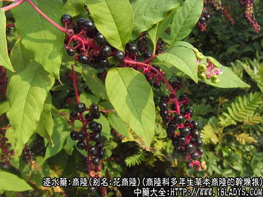
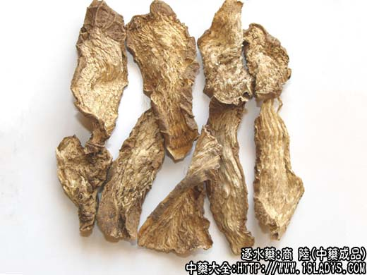

商陆为少常用中药《神农本草经》列为下品。
别名：花商陆。
来源：为商陆科多年生草本植物商陆的干燥根。
产地：主产河南、湖北、安徽、陕西等地。此外河北、甘肃、四川、贵州等省亦产。多为野生。
性状鉴别：在产地已加工成横切或纵切片，大小薄厚不一。外皮灰棕色、皱缩。切面浅黄棕色或类白色。横切片木质部突起，韧皮部凹凸不平的同心环纹，俗称“罗盘纹”（商陆特点）。纵切片木质部呈多数平行纵条状突起。质坚硬，难折断。气微，味苦微甜而麻舌。
以片大、色白两面环纹明显者为佳。
主要成分：含三萜、皂甙甾族化合萜物，生物碱和硝酸钾等。
功效与作用：主要为利尿作用。由于刺激血管运动神经中枢，使肾区血流增进而利尿。此外，其所含的钾盐与利尿作用也有关。大剂量反而引起尿量减少。除利尿处，也有一定的峻泻作用，服后刺激肠粘膜，可引起水泻。
商陆毒性较大，商陆素能引起中枢神经麻痹，呼吸和运动障碍，语言不清，躁动，肌内抽搐，严重者出现心脏麻痹而死亡。中毒较轻者有发热、呼吸频数、血压升高、头痛、眩晕、剧泻。
炮制：醋制、切块。
性味：苦寒。有毒。
归经：入肾经。
功能：逐水、利尿、消肿。
主治：水肿胀满、小便不利。
临床应用：商陆逐水消肿，效力次于芫花、甘遂、大戟，主要取其利尿作用，以治疗肾性水肿，但由于毒性较剧，内服须极慎重。有报道谓如用商陆5g与五花肉（即半肥瘦猪肉）60g煎汤（只饮汤），可减低商陆毒性。又过去曾有用商陆合剂（商陆、泽泻、杜仲）治疗慢性肾炎水肿而体质尚好者，有一定疗效，可增加尿量，减轻浮肿，但此方近年已较少用。总之，因商陆毒性较大，临床使用应取慎重态度。孕妇忌用。
用量：1.5g～4.5g（一日量）。
处方举例：商陆合剂：商陆、泽泻、杜仲各3g水煎二次，一日内分二次空腹服完。
附：广东商陆通用名为樟柳头。为姜科植物闭鞘姜的干燥根茎。味酸辛，性微寒，有小毒。含皂甙、酸类和有机酸。功能利水消肿，拨毒、止痒。用于治小儿急性肾炎水肿，也治尿道感染。外用煎水洗患部治荨麻疹。用量3～15g入煎剂。外用适量。方如急性肾炎方，处方：樟柳头15g，鹰不泊9g，白茅根15g，仙鹤草9g，车前子9g，水煎服。据报道，此方对小儿急性肾炎疗效较好。
注：1、全国大部地区所用的商陆为正方所述的品种，与历代本草记述相符。此外还有（1）河南信阳、湖北黄岗、孝感以石竹科植物丝石竹的根（即有些地区作银柴胡用者）作商陆用。（2）广东以姜科植物闭鞘姜的根作商陆用。（3）四川产一种野牡丹科植物朝天罐的根运销外地作商陆用。这三种商品均与商陆有很大差异，并不具“罗盘纹”之特征。易于区别。
2、《中药鉴别手册》记载，山东、浙江、江西尚产销一种美州商陆，未做商品性状描述，上海《中药学讲义》记载商陆与商陆同用。但据《天津中草药》商陆项下记载“本种不能入药，误服使人肝昏迷”。